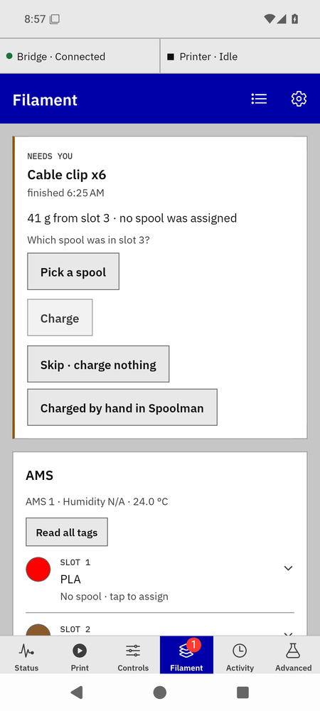
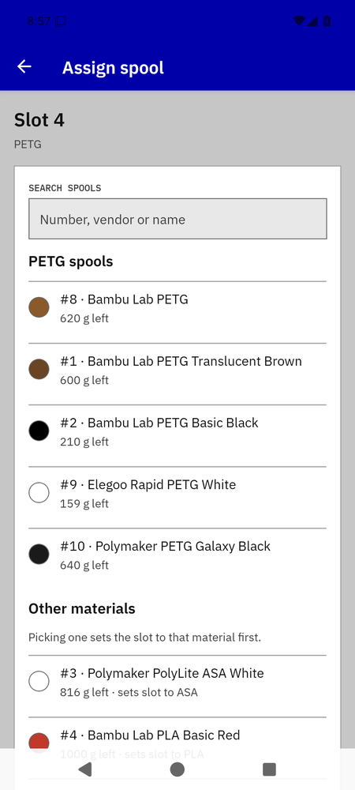
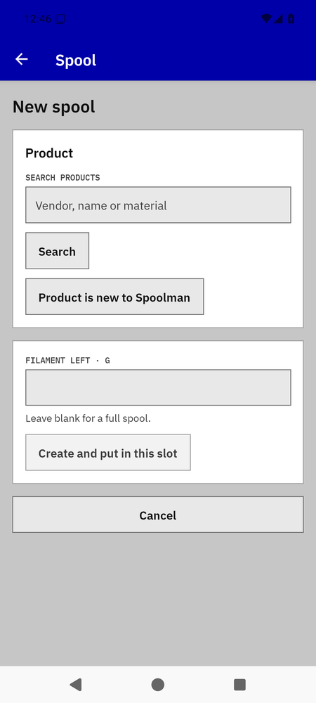
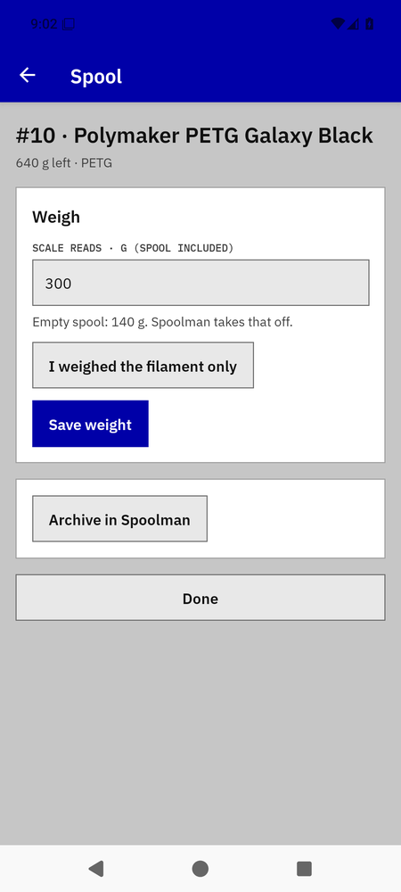
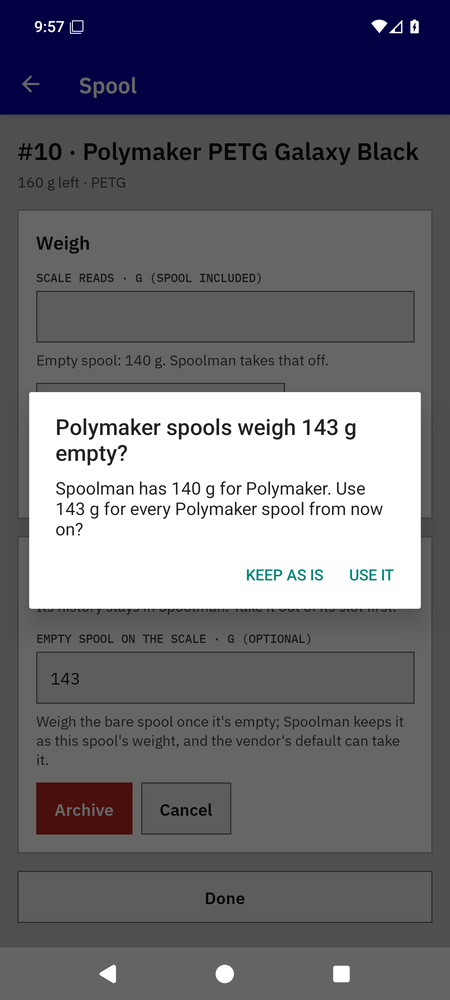

Spools and Spoolman
Spoolman keeps every spool, product and vendor; the bridge records which spool sits in which slot and charges that spool as prints run. Bambu Lab spools announce themselves by RFID tag; everything else you assign by hand, once, when you load it.
A Bambu spool with a tag: nothing to do

A tagged spool the bridge adopted on its own.
- Load the spool. The AMS reads its tag (about a minute from a cold load; the row says "reading tag…" meanwhile).
- The bridge looks the tag up. A spool it has seen before comes back as that Spoolman spool ("#4 is back"); a new tag becomes a new Spoolman spool with the tag's vendor, material, colour, package weight and remaining percent, and is assigned to the slot.
- For an hour the row says "added from its tag" or "matched by its tag"; Activity keeps the line for good.
Tag links live in the bridge. Spoolman sees an ordinary spool. If Spoolman is unreachable when the tag appears, the bridge tries again on later reports and never creates the spool twice.
Any other spool: assign it once

Assign sheet.
- Load the spool. The row reads the printer's material ("PETG") and "No spool · tap to assign".
- Tap the row, then Assign a spool. Spools of the slot's material come first ("#9 · Elegoo Rapid PETG White · 159 g left"); "Other materials" follow, and picking one of those sets the slot's material on the printer first. Search by number, vendor or name.
- Tap the spool. The sheet closes with a toast ("#9 · Elegoo Rapid PETG White in slot 3") and the row shows it.
Swapped one untagged spool for another of the same kind without telling the app? The bridge can't see that. Use Change spool on the row, and Wrong spool? on any print already charged to the old one.
The assignment survives relabelling the slot on the printer or by the bridge (colour, product, temperatures). It ends when the slot is emptied and loaded again, when a different tag appears, when the material type changes, or when you assign another spool.
A spool Spoolman doesn't have yet

The New spool form before a search.
- In the assign sheet tap Add a new spool to Spoolman.
- Search the product by words, in any order: "polymaker petg black" finds "Polymaker PolyLite™ PETG Black". If Spoolman has it, tap it. If it only exists in Spoolman's built-in catalog, it appears under From Spoolman's catalog; tapping it fills in vendor, name, material, colour, density, package weight and empty-spool weight.
- If neither has it, tap Product is new to Spoolman and fill the form; density and the package weight are required, the material fills a typical density.
- Enter the filament left (blank means a full spool) and tap Create and put in this slot. The alert tells you the new number: write it on the spool.
Weighing a spool

Weigh.
- Tap the row, then Weigh or archive #9.
- Put the spool on the scale and type the reading into Scale reads · g (spool included). The bridge takes the empty-spool weight off; the hint shows it. If Spoolman has no empty-spool weight for that product, tap I weighed the filament only and enter the filament alone, or set the spool weight in Spoolman first.
- Tap Save weight. The toast and the row show the new grams.
Spools off the AMS
Under the slots, Off the AMS lists every spool Spoolman holds that sits in no slot on any printer and isn't archived: its number, product and colour, and the grams left ("#9 · Elegoo Rapid PETG White", "159 g left"). The section appears only when it has a spool to show. Tap a spool to open its sheet and weigh or archive it there; opened from this list, the sheet leaves every slot as it is.
Archiving an empty spool
- For a spool still in its slot: tap the slot, then Weigh or archive #10, then Archive in Spoolman. Opened from its slot, the sheet takes the spool out of the slot for you when it archives.
- For a spool already out of the AMS: tap it under Off the AMS, then Archive in Spoolman.
- Optionally weigh the bare spool and type it into Empty spool on the scale · g, then Archive. Spoolman keeps that weight on the spool. If it differs from the vendor's figure, the app asks once whether every spool of that vendor should use it; "Use it" updates the vendor in Spoolman.

The vendor offer after archiving with a measured bare weight.
Archived spools stay in Spoolman with their history; they stop appearing in the app's lists.
When a spool comes out of a slot
The app remembers which spool it last saw in each slot. When that spool has left the slot, sits in no other slot and isn't archived, the slot row asks: "#10 · Elegoo Rapid PETG White came out of this slot". The slot asks while it is empty and after the next spool goes in. A swap made while the app was closed is caught the next time you open the Filament tab.
- Empty – archive it archives #10 in Spoolman straight away. It skips the bare-spool weight; to record one, archive from the spool's sheet instead.
- Back on the shelf keeps #10 and stops the question for #10 in that slot. The spool stays under Off the AMS.
The question stays until you answer it. Answers and what each slot last held are kept on this device only, so a device that never saw #10 in the slot may not ask. If #10 goes into a slot again and later comes out, the slot asks again.
Read tag
- A Bambu spool whose tag didn't register: tap the row, then Read tag; or Read all tags above the rows to do every AMS slot one after another. Both need the printer idle; while printing the card says "Read tags when the printer is idle."
- The row reads "Reading tag… (about a minute)". A read takes about 48 s on a P1S; the app waits up to 75 s per slot.
- Then: "Tag read: Bambu PETG Translucent" and the bridge adopts the spool as above; or "No tag found in slot 2 · reports PETG" for an untagged spool; or the bridge's own words with Try again if the printer refused the command.
Open Spoolman
Anything else about a record — renaming, merging vendors, deleting — is done in Spoolman's own web app. Open Spoolman in Settings, and on a spool's sheet, takes you there when the bridge is configured with Spoolman's web address.
Bambu Bridge manual · for bridge 0.7.0b1 and app 0.21.0-beta.9. Independent community software, AGPL-3.0-only.